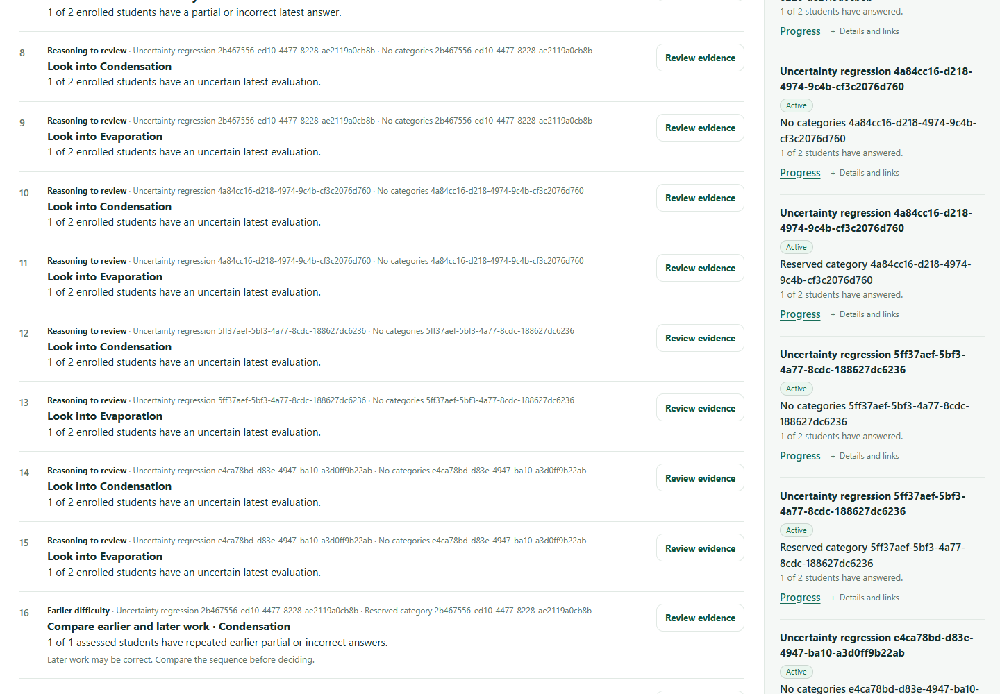

Follow-up to draft PR #138, October 25, 2026.
Original CI run 40225306718 failed at the obsolete Teaching Desk title assertion. Its complete HTTP body already contained resolved Overview content after the Suspense fallback. The local reproduction confirmed the same failure.
Only regression checks and evidence changed. The Overview page, loader, model and CSS remain byte-for-byte unchanged from the approved implementation.
The service gate now consumes the full response and requires real Overview elements after stripping script/style payloads. It checks both owned uploaded assignments and their destinations, the two concepts' distinct-student uncertainty (1 of 2 enrolled students), separate missing work (1 of 2), and exact assignment/origin/concept/session/attempt/evaluation evidence actions. It follows those actions to the original uncertain answer. React may emit later list items in separate hidden segments before inserting them; the assertion handles this without confusing serialized RSC strings with rendered elements.
The original reserved-category uncertainty, diagnostic replay, historical lesson-version, unchanged-evidence, unauthorized student/foreign-teacher, and private-response checks remain intact. A negative regression test rejects shell-only, fallback-only, script-only, and unavailable output; it runs in the existing npm test glob. The helper lives under scripts so the existing production Docker image includes it.
The same successful uploaded fixture was opened in Chrome against the production application. The observer recorded loading visible / Overview hidden → loading hidden / Overview visible. Both owned uploads appeared in the assembled rail; two uncertainty decisions and one missing-work row appeared; both Evidence actions opened the original saved response. No browser errors or navigation writes occurred. This closes the initial report's loading-fallback visibility gap for this fixture; it does not establish whole-database outage handling.
Observed state sequence and exact URLs · Unmodified application screenshot · Reproduction harness

Local checks passed: 633 repository unit tests, 27 focused tests, the full uploaded-lesson uncertainty service gate, browser transition/actions, lint, TypeScript and formatting.
Complete lessons:uncertainty:check result · Focused tests · Repository unit tests · Lint · TypeScript · Formatting. The service and browser tests use only fictional saved evaluations, never a model provider.
AUTH_URL=http://127.0.0.1:3516 node --experimental-strip-types --conditions=react-server --env-file=.env scripts/check-lesson-uncertainty.ts node --env-file=.env app/teacher/overview/verification/uncertainty-browser.mjs <logged assignment UUID> <logged probe UUID> node --experimental-strip-types --conditions=react-server --test app/teacher/overview/overview.test.ts tests/teacher-overview-streamed.test.ts tests/teacher-priorities.test.ts tests/teacher-shell-metadata.test.ts tests/teacher-workspace-contracts.test.ts tests/teacher-progress-return.test.ts npm test npm run lint npm run typecheck npm run format:check
Browser harness prerequisites: the same isolated local test origin and fictional teacher environment, an installed browser via BROWSER_EXECUTABLE, and an existing Playwright runtime via PLAYWRIGHT_PACKAGE. The latest GitHub CI result is linked in the PR description; this static evidence bundle records local verification before that push.
H independently reproduced stale Insights expectations in the same service gate. H owns the Insights-only inner block in PR #137 (commit 9ef9391) and related metrics/pattern navigation checks. F leaves the original Insights assertions intact on the common baseline. Combine F's Overview branch and H's Insights-specific block when integrating both PRs; preserve the original privacy/history/uncertainty checks. No production code, shared shell or another agent's UI was modified. No merge or paid call occurred.